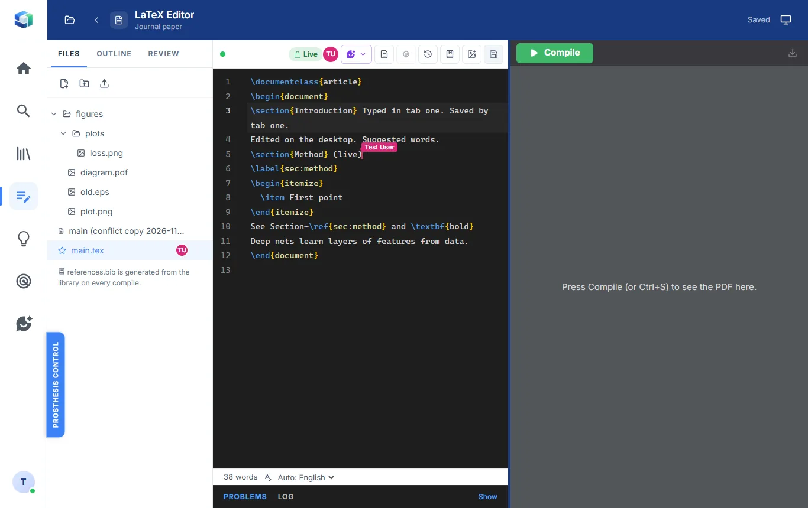
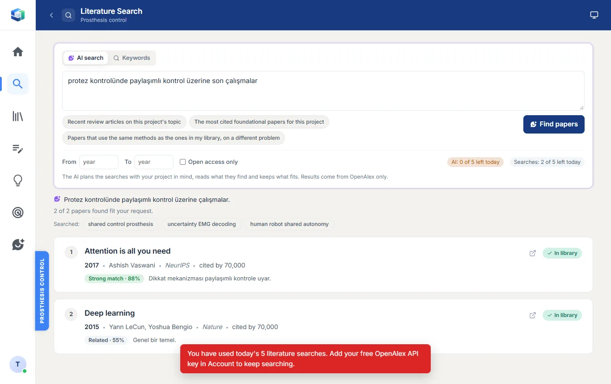

Co-write
Track changes are free.
Share a project and write in the same file at the same time. Co-authors suggest changes and leave comments; you accept or reject them one by one. Edits are end-to-end encrypted on the way.

ResearchCube is a research workspace in your browser: a LaTeX editor that compiles on your own computer, real-time co-writing with track changes, and a reference library, PDF reader and AI literature search in the same place. Your projects stay in your own Google Drive.
Last updated: 19 November 2026
What you get without paying, side by side.
| ResearchCube Free | Overleaf Free | |
|---|---|---|
| Collaborators per project | 2 | 1 |
| Track changes and comments | Included (suggested changes, comments) | Paid plans only |
| Version history | Kept by Google Drive (older versions usually for 30 days) | Previous 24 hours |
| Compile time limit | None on our side: LaTeX compiles in your browser | “Basic” limit; paid plans get 24× more time |
| Reference library | Built in: add papers by click, DOI or .bib; citations complete from it | Zotero / Mendeley sync on paid plans only |
| Literature search | 250M+ works (OpenAlex), AI ranks what fits your project | Not included |
| PDF reader with highlights and notes | Included | Not included |
| AI writing help | 5 requests a day, with your own free Gemini key | 5 AI uses a day; AI Assistant on paid plans |
| Templates | IEEE, Elsevier, Springer, ACM, REVTeX, AMS, thesis templates; or upload your own | Thousands of community templates |
| Git / GitHub | Not available | Paid plans |
| Where your files live | Only in your own Google Drive | On Overleaf's servers |
| Sign-in | Google account | Any email |
Overleaf details from overleaf.com/user/subscription/plans, checked on 19 November 2026. Plans change; check the source before you decide.
Write and compile LaTeX directly in ResearchCube. The compiler (TeX Live in WebAssembly) runs on your own computer, so there is no compile queue and no server timeout.

Share a project and write in the same file at the same time. Co-authors suggest changes and leave comments; you accept or reject them one by one. Edits are end-to-end encrypted on the way.
Search more than 250 million scholarly works in plain words; the AI keeps what fits your project and says why. Add papers in one click, read and annotate the PDFs, and cite them in your LaTeX without leaving the workspace.

An honest answer: it depends on how you work. See 7 free Overleaf alternatives compared →
Yes. The Free plan never ends: 5 projects, 2 collaborators per project, the LaTeX editor, templates, the library and the PDF reader, plus 5 AI requests and 5 literature searches a day. Pro removes the daily limits.
Yes. Download your project from Overleaf as a .zip, upload the .tex files and figures to the ResearchCube editor, and import your .bib file into the library.
LaTeX compiles inside your own browser (TeX Live in WebAssembly), so there is no server-side compile timeout. Very large documents compile as fast as your computer allows.
Only in your own Google Drive. ResearchCube keeps only basic account data such as your membership and plan.
Yes. ResearchCube signs in with Google because your projects are stored in your Google Drive.
Free, no card needed. Sign in with Google and your first project is ready.